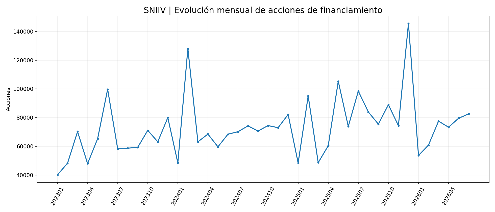

DATA ENGINEERING · MÉXICO · SNIIV
Housing Data Pipeline
Pipeline batch con Python, Parquet, PostgreSQL y un modelo dimensional para analizar el financiamiento de vivienda en México.
Explorar dashboard Ver arquitectura Código y documentación